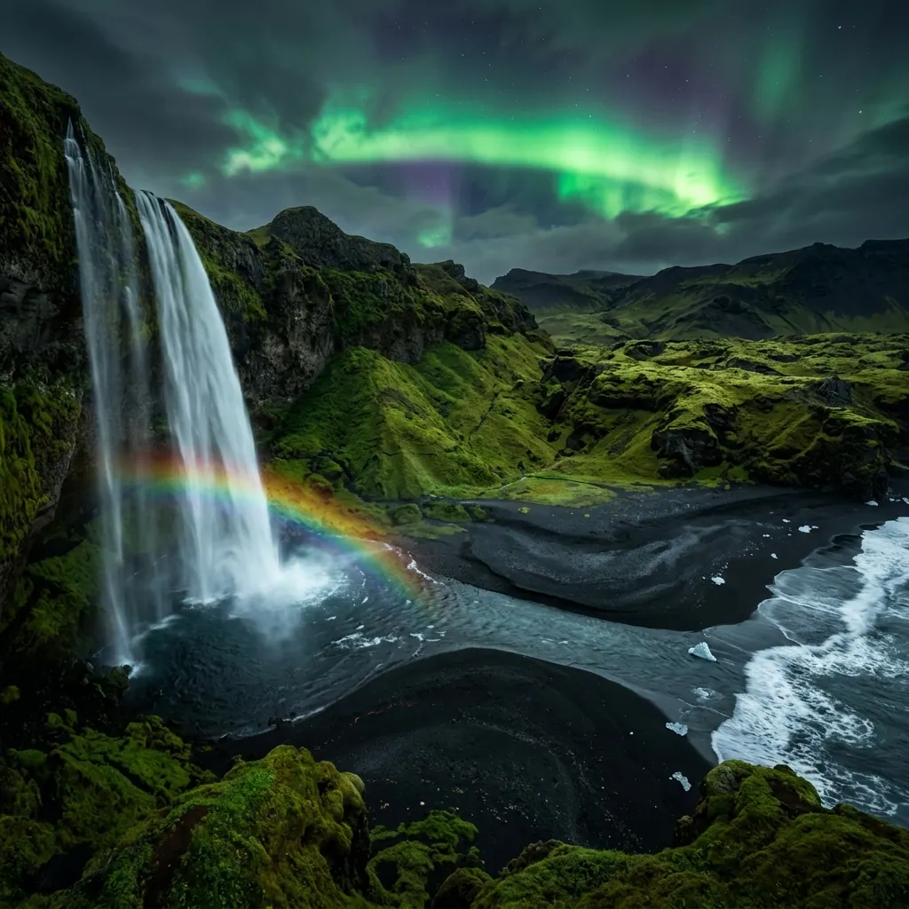
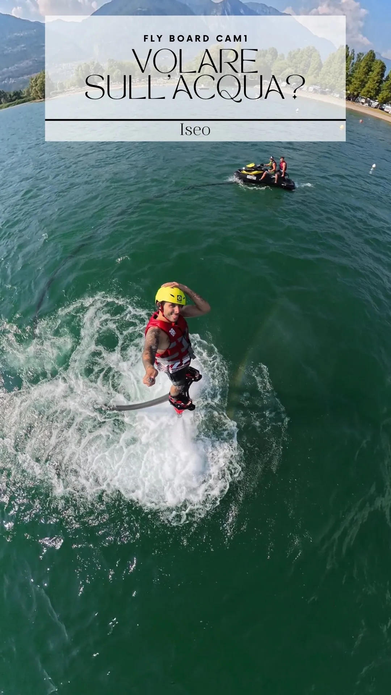
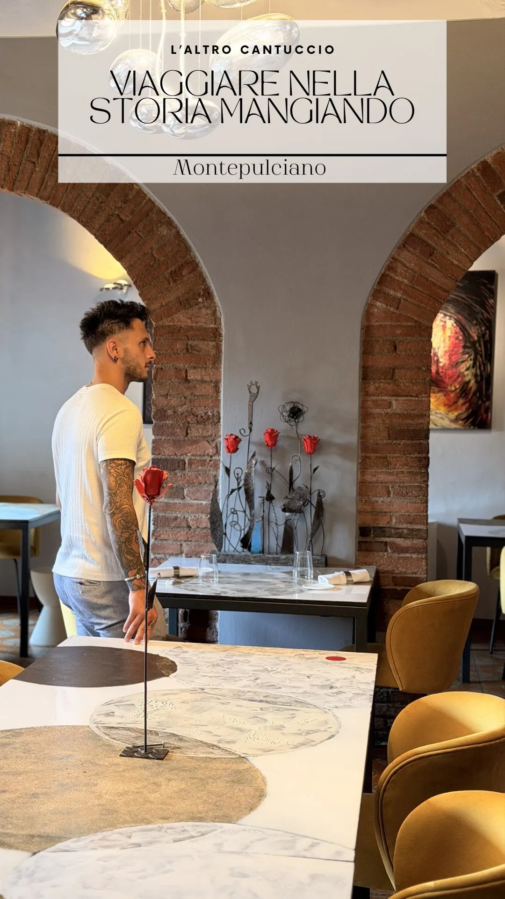
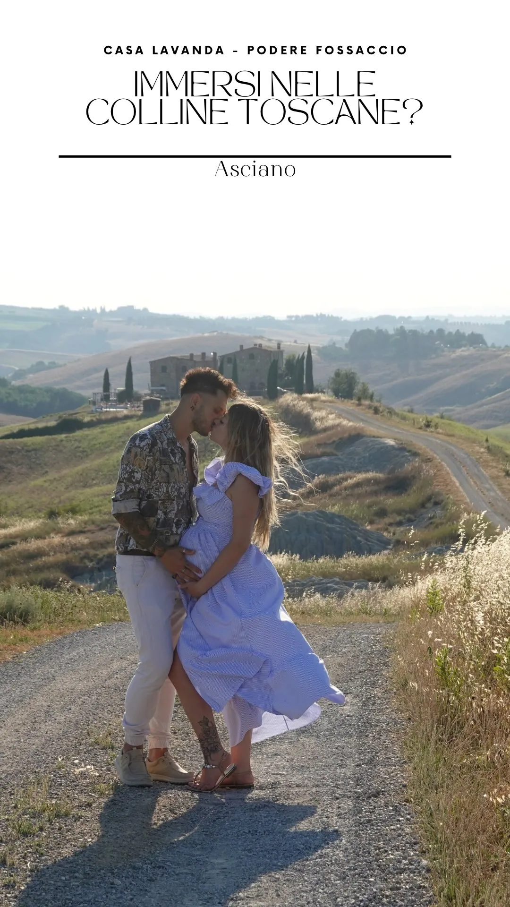
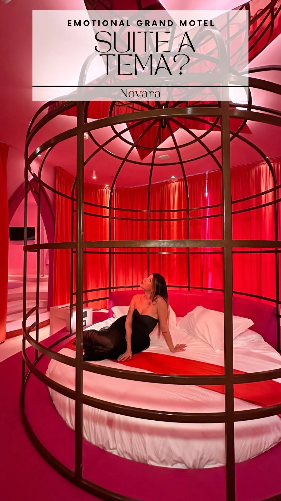
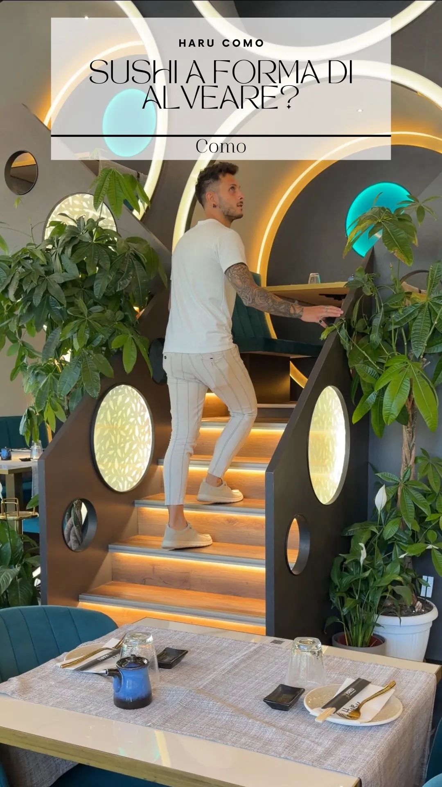

Atlante Travellini · Registro dei posti veri
L'atlante personale di Rodrigo & Betta.
Ogni posto è schedato come in un archivio: codice, timbro, verdetto. Una rotta d'inchiostro unisce le tappe — perché queste non sono liste, sono viaggi fatti davvero.
Palette · token reali
La direzione vive sui token atlante già promossi a sistema nel 2026-07: carta calda come superficie, inchiostro caldo come testo, il timbro coincide con l'accento di brand.
--color-atlante-carta #f2ecdf--color-atlante-carta-deep #e6ddcd--color-atlante-inchiostro #1e1c18--color-atlante-timbro #c2410c--color-atlante-notte #17375aSpecimen Fraunces · scala della direzione
h1 — clamp(2.8rem, 5vw, 4.6rem) / 1.0 · Fraunces 400 (qui comanda la mappa, non il titolo)
Dove siamo stati, in ordine.
Codice d'archivio — Inter 0.66rem · tracking 0.24em · il «(218-09)» di Cereal reso onesto
IT-05 · 2026 · Toscana
Numero-tappa — Fraunces clamp(2.7rem, 4.5vw, 4.5rem) in terracotta (già .trace-number strong)
③
Meta/didascalia — 0.8125rem minimo (pavimento a11y, NON i 12px di Cereal)
Sezione nuova · «La rotta» — gesto-firma: la rotta che unisce le tappe
Dove siamo stati, in ordine.
Aperitivo coi vampiri a Volterra.

Voleresti sull'acqua?

Viaggiare nella storia mangiando?

Sezione nuova · «L'atlante» — schede d'archivio con timbro
29 posti, zero invenzioni.

IT-21 · 2026
Sarteano · Chiostro Cennini

IT-23 · 2026
Asciano · Casa Lavanda

IT-08 · 2026
Novara · Emotional Grand Motel

IT-15 · 2026
Como · Haru Sushi
--trace-red #bd3f23 al timbro di brand #c2410c (oppure approvare il rosso più caldo) · ② rough-notation SOLO se il tratto SVG puro non bastasse — default zero-install · ③ contatori solo su dati veri dal contentLibrary.